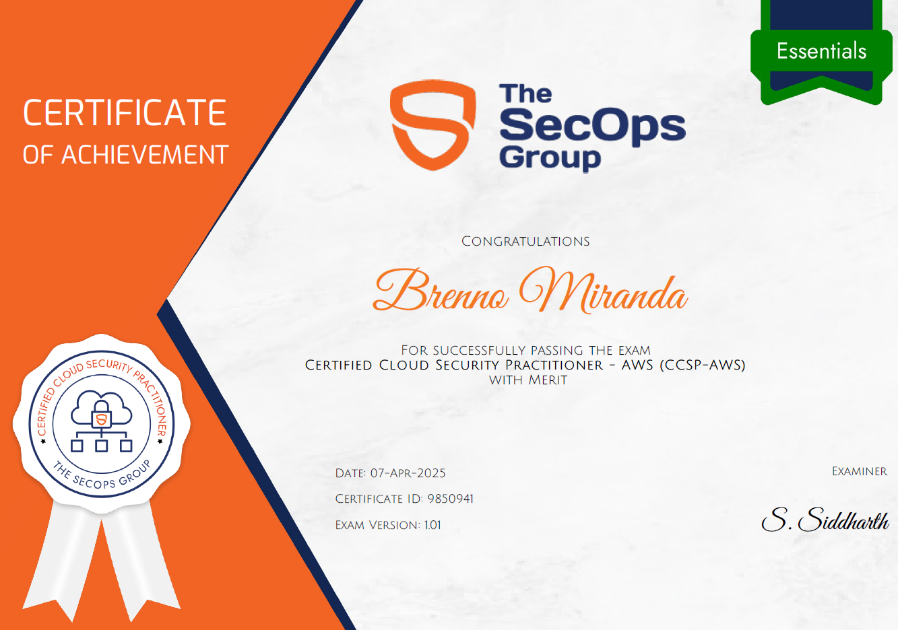

A CCSP-AWS, Certified Cloud Security Practitioner – AWS, ofertada pela The SecOps Group, é uma certificação voltada à segurança de AWS Cloud, abordando conceitos relacionado aos serviços de autorização, segurança de dados, compilance, segurança de infraestrutura, monitoramento e resposta a incidente, além de erros de segurança e ataques comuns.
No dia 07/04/2025, realizei a prova, sendo aprovado com méritos.

Temas cobrados
Perante o escopo da certificação, os seguintes temas são abordados:
- Authentication, Authorization and Access Control
- AWS Identity and Access Management
- AWS Cognito
- AWS Service Control Policies
- Data Security
- AWS Key Management Service (KMS)
- AWS Secrets Manager
- AWS Certificate Manager
- Compliance and Governance
- AWS Config
- AWS Organizations
- Infrastructure Security
- AWS Virtual Private Cloud (VPC)
- AWS Security Group
- AWS Network ACL
- Monitoring and Incident Response
- AWS CloudWatch
- AWS CloudTrail
- AWS Detective
- AWS GuardDuty
- Common Security Issues Related to AWS Services
- AWS Elastic Container Services (ECS)
- AWS Elastic Kubernetes Services (EKS)
- AWS Elastic Compute Services (EC2)
- AWS Simple Storage Services (S3)
- AWS Lambda Functions
- Common Application Security Attacks on AWS Cloud
- Broken Access Control
- Server Side Request Forgery
- SQL Injection
- Code Injection
Sobre o exame
Trata-se de uma prova de múltipla-escolha de 60 questões, onde é disponbilizado 60 minutos para sua conclusão. Caso o candidato acerte mais de 60% da prova, o mesmo será aprovado, assim se certificando. Caso o mesmo acerte mais de 80% da prova, sua certificação terá o acrescimo de "with merit", evidenciando assim a alta porcentagem de acerto. A prova aborda todos os temas citados em seu escopo, tendo questões que variam entre análise de cenários propostos e explicação de um determinado serviço da AWS.Durante a prova, é requerido acesso a camera e microfone, para validação de ambiente físico e evitar ações que ferem a conduta de ética do exame.
Referências de estudo para o exame
- HackTricks Cloud | https://cloud.hacktricks.wiki/en/index.html
- PwnedLabs | https://pwnedlabs.io/
- AWS Identity and Access Management | https://aws.amazon.com/pt/iam/
- AWS Cognito | https://aws.amazon.com/pt/cognito/
- AWS Service Control Policies | https://docs.aws.amazon.com/orgs_manage_policies_scps.html
- AWS Key Management Service (KMS) | https://aws.amazon.com/pt/kms/
- AWS Secrets Manager | https://aws.amazon.com/pt/secrets-manager/
- AWS Certificate Manager | https://aws.amazon.com/pt/certificate-manager/
- AWS Config | https://aws.amazon.com/pt/config/
- AWS Organizations | https://aws.amazon.com/pt/organizations/
- AWS Virtual Private Cloud (VPC) | https://aws.amazon.com/pt/vpc/
- AWS Security Group | https://docs.aws.amazon.com/ec2-security-groups.html
- AWS Network ACL | https://docs.aws.amazon.com/vpc-network-acls.html
- AWS CloudWatch | https://aws.amazon.com/pt/cloudwatch/
- AWS CloudTrail | https://aws.amazon.com/pt/cloudtrail/
- AWS Detective | https://aws.amazon.com/pt/detective/
- AWS GuardDuty | https://aws.amazon.com/pt/guardduty/
- AWS Elastic Container Services (ECS) | https://docs.aws.amazon.com/pt_br/AmazonECS/latest/developerguide/Welcome.html
- AWS Elastic Kubernetes Services (EKS) | https://aws.amazon.com/pt/eks/
- AWS Elastic Compute Services (EC2) | https://aws.amazon.com/pt/ec2/
- AWS Simple Storage Services (S3) | https://aws.amazon.com/pt/s3/
- AWS Lambda Functions | https://aws.amazon.com/pt/lambda/
- Broken Access Control | https://community.aws/owasp-application-vulnerabilities-01-what-is-broken-access-control
- Server Side Request Forgery | https://portswigger.net/web-security/ssrf
- SQL Injection | https://portswigger.net/web-security/sql-injection
- Code Injection | https://www.bugcrowd.com/glossary/code-injection/